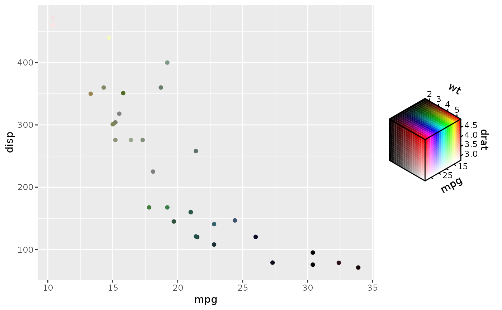

colour_spec.RdThese functions create vectors that store values specifying different channels in a colour space.
hcl_spec(h = double(), c = double(), l = double()) hsv_spec(h = double(), s = double(), v = double()) hsl_spec(h = double(), s = double(), l = double()) rgb_spec(r = double(), g = double(), b = double()) cmyk_spec(c = double(), m = double(), y = double(), k = double()) cmy_spec(c = double(), m = double(), y = double())
| h, c, l, s, v, r, g, b, m, y, k | Colour channels. Abbreviations are colour space
specific and written in full in the Functions section. Can be a mix of
|
|---|
An colour_spec, vctrs_rcrd S3 vector.
These constructors are convenient for creating vectors that can be
supplied to the aes() function in ggplot2. During plot building, a
chromatic colour or fill scale will be assigned to coordinate the training
and mapping of colour space vectors. Missing channels will get placeholder
values that will not affect scale training.
The 'rule' is that your can combine two vectors of the same colour space,
but only if the colour channels can be combined. For example, you can
combine rgb_spec(10, 5, "A") with rgb_spec(6, 2, "B"). You can not
combine hcl_spec(7, "C", 12) with neither hcl_spec(12, 8, 9) nor a
different colour space cmy_spec(3, "D", 4).
hcl_spec: Hue, Chroma and Luminance colour space.
hsv_spec: Hue, Saturation and Value colour space.
hsl_spec: Hue, Saturation and Lightness colour space.
rgb_spec: Red, Green and Blue colour space.
cmyk_spec: Cyan, Magenta, Yellow and Key (black) colour space.
cmy_spec: Cyan, Magenta and Yellow colour space.
scale_chromatic for the colour and fill scales that mirror these colour space vectors.
rgb(), hsv(),
hcl() and farver::encode_colour().
# In combination with ggplot2 ggplot(mtcars, aes(mpg, disp)) + geom_point(aes(colour = hsv_spec(mpg, drat, wt)))#> <rgb_spec[4]> #> [1] [ 1,A,3] [ 2,B,2] [12, ,4] [11,X,5]# Convert all channels to numeric matrix with `as.matrix()` as.matrix(hcl_spec(10:15, LETTERS[1:6], 12:7))#> h c l #> [1,] 10 0.0 12 #> [2,] 11 0.2 11 #> [3,] 12 0.4 10 #> [4,] 13 0.6 9 #> [5,] 14 0.8 8 #> [6,] 15 1.0 7#> [1] "#E6CCB2"